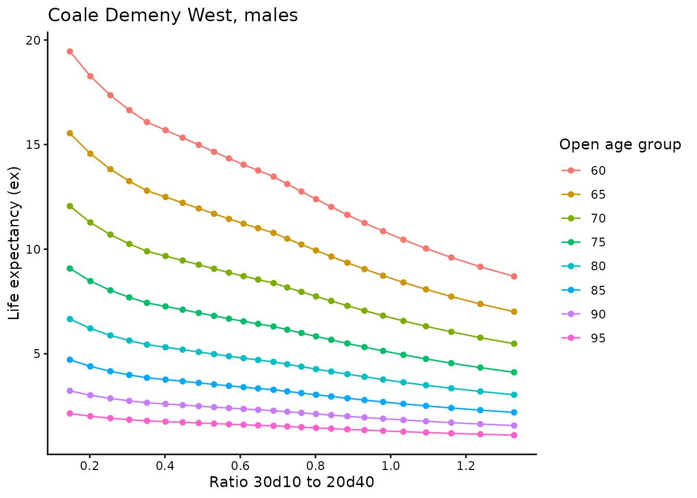
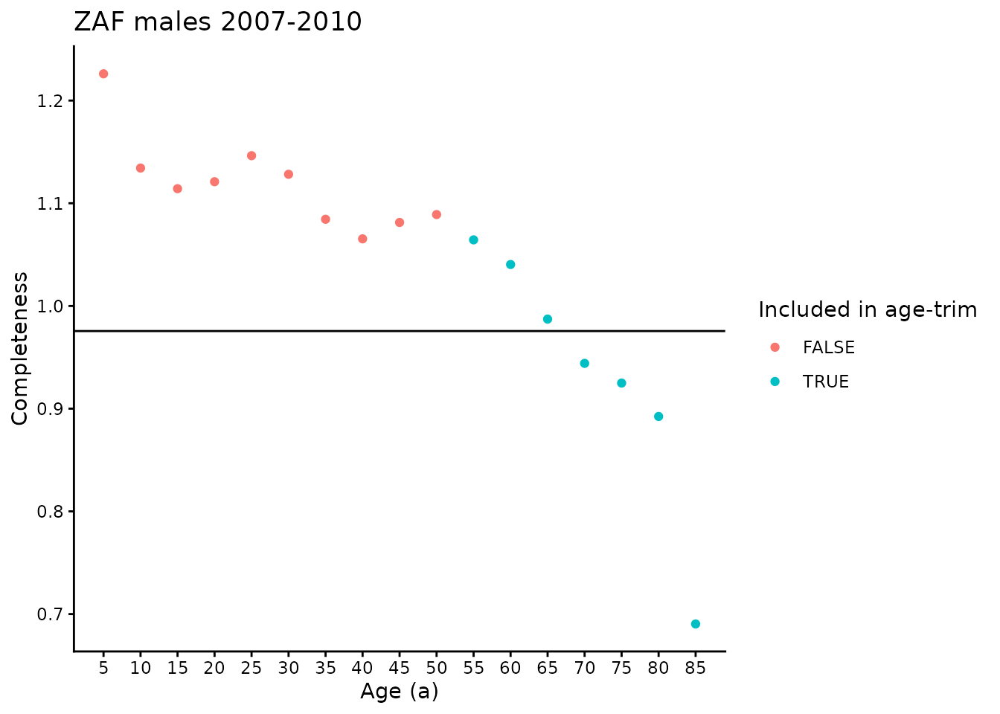

Synthetic Extinct Generations (SEG)
This vignette describes the methods for the Synthetic Extinct Generations Death Distribution Method (DDM) for estimating completeness of death registration. These methods are not original to this package, but are summarized here. For original sources, see the references section of this vignette.
Input data
Input data required for SEG is:
- Age-specific population counts from two censuses (recommended < 20 years apart)
- Age-specific death counts from death registration in between the two censuses
Age-specific death counts can come from one or many years of death registration, but should be converted to average annual counts.
This package includes an example dataset, which matches the example used but the IUSSP.
The example dataset is for South African males, between 2001 and 2007:
head(zaf_2001_2007)
#> location pop1 pop2 deaths migrants age_start sex date1
#> <char> <num> <num> <num> <num> <num> <char> <Date>
#> 1: South Africa 2223006 2505744 197911.88 10605.138 0 male 2001-10-10
#> 2: South Africa 2425066 2560642 15566.49 2848.486 5 male 2001-10-10
#> 3: South Africa 2518985 2452339 11207.11 5152.799 10 male 2001-10-10
#> 4: South Africa 2453156 2553293 25472.64 16573.504 15 male 2001-10-10
#> 5: South Africa 2099417 2362519 54959.64 14802.771 20 male 2001-10-10
#> 6: South Africa 1899275 2033165 102802.12 4714.013 25 male 2001-10-10
#> date2
#> <Date>
#> 1: 2007-02-15
#> 2: 2007-02-15
#> 3: 2007-02-15
#> 4: 2007-02-15
#> 5: 2007-02-15
#> 6: 2007-02-15As-is, these data are for total deaths in the interval, so we need to
divide deaths by the time between censuses in years. Note that in the
seg function, this happens internally, via the
input_deaths_annual argument.
# convert to average annual values
dt <- copy(zaf_2001_2007)
dt[, t := as.numeric(difftime(date2, date1, units = "days")) / 365]
dt[, deaths := deaths / t]
dt[, migrants := migrants / t]A bit on notation
Assume the following notation:
- : length of age interval in data
- : population at census 1
- : population at census 2
- : mean population between census 1 and census 2
- : average annual deaths recorded between censuses
- : age-specific growth rate between ages and
- : cumulative growth rate up to age
- : life expectancy at age
Additionally, we use traditional demographic notation where stands for some demographic measure, , for the age interval to .
Summary
Consider a hypothetical birth cohort, born in 1900, with a population of 100 at age 50 in the year 1950. Assuming there is no migration and the vital registration is complete (and no one lived beyond age 120), we could count up all of the deaths observed in this birth cohort between 1950 and present-day and it should add up to 100 deaths. In other words, each of the 100 individuals in the population in 1950 died and was counted by the vital registration system. If instead, 90 deaths were counted, we could compare the 90 recorded deaths to the population of 100 and estimate completeness to be 90%. The SEG method leverages this relationship between population and mortality, but uses period-specific mortality as opposed to cohort-specific mortality.
To summarize the basic relationship: Note that the population of interest in the numerator and denominator can be:
- : the population aged , also equivalent to the average number of birthdays age in one year.
- : the population in the age interval to where is commonly 5 to match 5-year age intervals present in abridged data.
Both numerator and denominator types can be used in the
DDMethods package.
Population from censuses
The population from censuses can be estimated as follows:
: Average annual birthdays aged is approximated as the geometric mean of and divided by the length of the age interval (): : Population aged to is approximated as the geometric mean of from census 1 and from census 2:
Population from death registration
The population from death registration is estimated using the synthetic cohort method. In short, we first compute age-specific population growth between censuses, then aggregate to get cumulative growth over age. Cumulative growth rate is used to go from recorded deaths to to get the ratio of to . This ratio is used to match with Coale-Demeny model life tables, to approximate life expectancy in the open age interval. From here, the synthetic cohort population is computed recursively starting at the open interval and working backwards, using recorded deaths, life expectancy, and age-specific growth rate. The following sections will describe each of these steps in more detail.
Age-specific population growth
For the age group in interval to , age-specific population growth, , can be approximated as:
Cumulative growth over age
To get cumulative growth over age, compute:
according to Bennett and Horiuchi (1984).
and ratio to
Then, is equal to recorded deaths times the exponentiated cumulative growth rate, again following Bennett and Horiuchi:
From here it is straightforward to sum over the relevant age groups and divide to get .
Life expectancy in the open interval
Using the Coale Demeny model life tables, we can construct a function that maps from to life expectancy for a given open age interval.
This plot shows the relationship between and life expectancy for the CD West male life tables:

The DDMethods package uses linear interpolation of ex
given discrete values from Coale Demeny life tables to get a continuous
mapping from ratio to ex.
The seg function requires a cd_region
column in your input data to select which Coale Demeny region should be
used for this mapping. The options are ‘west’, ‘east’, ‘south’, and
‘north’.
dt[, cd_region := "west"]Synthesis to estimate completeness
For each age, , within the selected age trim interval, compute:
And then take the mean over the completeness estimates generated from this set of ages to get a final estimate of completeness.
Using this package for SEG
To use this package for SEG, use the seg function:
results <- seg(
dt,
age_trim_lower = 55,
age_trim_upper = 90,
id_cols = c("location", "sex", "age_start"),
migration = FALSE,
input_deaths_annual = TRUE,
method_numerator_denominator_type = "Nx"
)This will return a list of two objects. The first has your input data with SEG component columns added:
head(results[["dt"]])
#> location pop1 pop2 deaths migrants age_start sex date1
#> <char> <num> <num> <num> <num> <num> <char> <Date>
#> 1: South Africa 2223006 2505744 36969.209 1981.0007 0 male 2001-10-10
#> 2: South Africa 2425066 2560642 2907.763 532.0866 5 male 2001-10-10
#> 3: South Africa 2518985 2452339 2093.447 962.5238 10 male 2001-10-10
#> 4: South Africa 2453156 2553293 4758.196 3095.8694 15 male 2001-10-10
#> 5: South Africa 2099417 2362519 10266.258 2765.1030 20 male 2001-10-10
#> 6: South Africa 1899275 2033165 19203.056 880.5602 25 male 2001-10-10
#> date2 t cd_region age_length pop_from_censuses growth_rate
#> <Date> <num> <char> <num> <num> <num>
#> 1: 2007-02-15 5.353425 west 5 NA 0.02236422
#> 2: 2007-02-15 5.353425 west 5 477171.8 0.01016158
#> 3: 2007-02-15 5.353425 west 5 487732.9 -0.00500873
#> 4: 2007-02-15 5.353425 west 5 507216.2 0.00747344
#> 5: 2007-02-15 5.353425 west 5 481482.2 0.02205480
#> 6: 2007-02-15 5.353425 west 5 413205.1 0.01272486
#> sum_growth cumulative_growth_rate ndx ratio_30d10_20d40 ex
#> <num> <num> <num> <num> <num>
#> 1: 0.00000000 0.05591055 39095.053 0.7264228 44.41136
#> 2: 0.02236422 0.13722504 3335.455 0.7264228 52.22436
#> 3: 0.03252579 0.15010715 2432.499 0.7264228 48.43791
#> 4: 0.02751706 0.15626892 5563.000 0.7264228 44.24240
#> 5: 0.03499050 0.23008954 12922.269 0.7264228 40.28890
#> 6: 0.05704531 0.31703871 26366.866 0.7264228 36.64450
#> open_age pop_age_a_synthetic_cohort n_ages pop_from_deaths
#> <num> <num> <int> <num>
#> 1: 85 693352.0 18 693352.0
#> 2: 85 585039.3 18 585039.3
#> 3: 85 553222.3 18 553222.3
#> 4: 85 565132.2 18 565132.2
#> 5: 85 539734.3 18 539734.3
#> 6: 85 473664.4 18 473664.4The second has completeness by each set of ID columns, as well as summaries such as slope, intercept, and relative census coverage:
print(results[["completeness"]])
#> location sex completeness
#> <char> <char> <num>
#> 1: South Africa male 0.9755668To evaluate completeness from each component age value, , we can do the following:
dt <- results[["dt"]]
dt[, completeness := pop_from_deaths / pop_from_censuses]
dt[, included_in_age_trim := between(age_start, 55, 90)]
gg <- ggplot(data = dt[!is.na(completeness)],
aes(x = age_start, y = completeness,
color = included_in_age_trim)) +
geom_point() +
geom_hline(yintercept = results[["completeness"]]$completeness) +
theme_classic() +
scale_x_continuous(breaks = seq(0, 85, 5)) +
labs(x = "Age (a)", y = "Completeness", title = "ZAF males 2007-2010",
color = "Included in age-trim")
print(gg)
Note that in some cases, like here, you can see how age-trim selection would strongly influence the summary of completeness. In our simulation exercises, we found that [55, 90) performed the best. If the completeness has an increasing or decreasing trend with , it may be a sign that there is either strong migration or large variation in census coverage. The later is a situation where the GGB-SEG hybrid is useful.
Additionally, we need to be careful in the interpretation of these plots to note that this is not age-specific completeness. In other words, it is not completeness for the interval to . Rather, it is overall completeness estimated using information from ages and above.
References
- Bennett NG, Horiuchi S. Mortality estimation from registered deaths in less developed countries. Demography. 1984 May;21(2):217-33.
- Dorrington RE. 2013. “Synthetic extinct generations methods”. In Moultrie TA, RE Dorrington, AG Hill, K Hill, IM Timæus and B Zaba (eds). Tools for Demographic Estimation. Paris: International Union for the Scientific Study of Population. http://demographicestimation.iussp.org/content/synthetic-extinct-generations-methods. Accessed May 27 2021.
- Hill K, You D, Choi Y. Death distribution methods for estimating adult mortality: sensitivity analysis with simulated data errors. Demographic Research. 2009 Jul 1;21:235-54.
- Murray CJ, Rajaratnam JK, Marcus J, Laakso T, Lopez AD. What can we conclude from death registration? Improved methods for evaluating completeness. PLoS Med. 2010 Apr 13;7(4):e1000262.
- Tim Riffe, Everton Lima, and Bernardo Queiroz (2017). DDM: Death Registration Coverage Estimation. R package version 1.0.0. https://CRAN.R-project.org/package=DDM